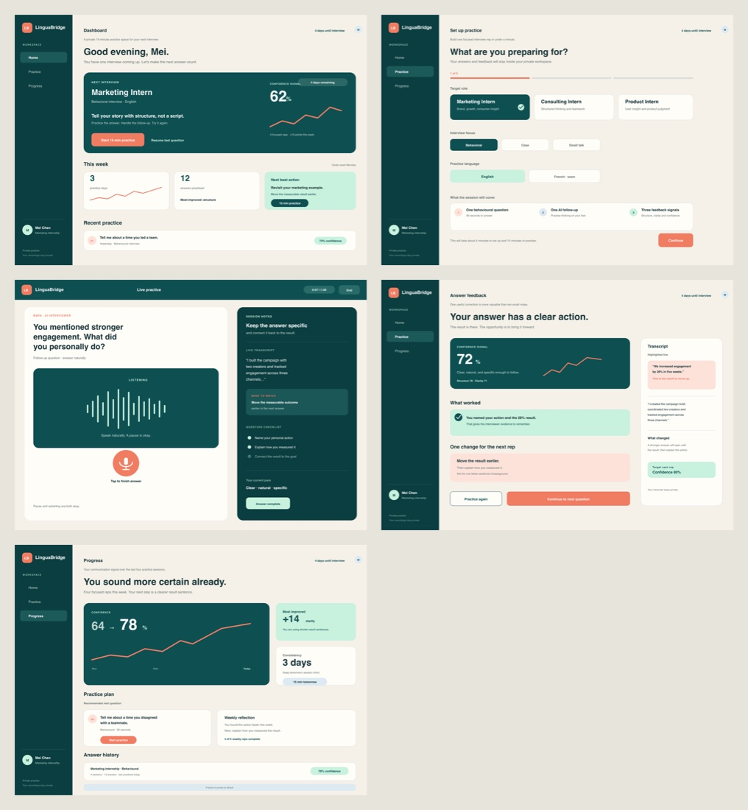

Pick a scenario
Choose the role and language you want to practise, then start with a question related to that interview.
Interview practice concept
Try a realistic interview question, record an answer and see what you could make clearer on your next attempt.
Try a sample question
Choose the role and language you want to practise, then start with a question related to that interview.
Record a first attempt. Use a real example and explain what you did, so the interviewer can follow your answer.
Review the feedback, pick one improvement and answer the same question again.
Read the question, say your answer out loud, then compare it with the example feedback.
Marketing internship
Think of a real example. What was your responsibility, and what did you do first?
Instead of saying “We managed to finish,” name the decision you made and what changed because of it.
Example: “I moved the review forward by a day, which left us time to correct two errors before the deadline.”
The Figma mobile prototype shows the scenario picker, recording screen and feedback view. Open the image to see the screens at full size.

Tell us what kind of interview you’re preparing for and which part you’d like to practise.